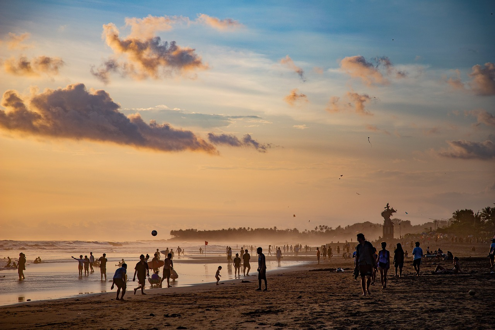

PRODUCTS

Australia
Some quick example text to build on the card title and make up the bulk of the card’s content.

Bali
Some quick example text to build on the card title and make up the bulk of the card’s content.

Dubai
Some quick example text to build on the card title and make up the bulk of the card’s content.

Brazil
Some quick example text to build on the card title and make up the bulk of the card’s content.